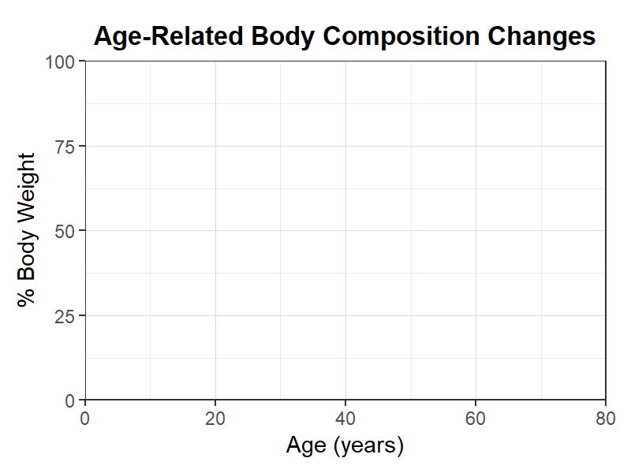

解剖学 (12)

デルマトームヒートマップ
デルマトーム分布のパターンをヒートマップで表示するテンプレート。

体型比率推移グラフ
体型比率推移グラフテンプレート。発達に伴う体型比率の変化を表示。

アロメトリー成長曲線
アロメトリー成長曲線テンプレート。器官の相対成長を表示。

細胞数セミログ
細胞数セミログテンプレート。細胞増殖を対数軸で表示。

身長-体重散布図
身長-体重散布図テンプレート。発達段階の身長体重関係を表示。

臓器重量散布回帰
臓器重量散布回帰テンプレート。体重と臓器重量の回帰分析。

組織構成棒グラフ
組織構成棒グラフテンプレート。体組成の各組織割合を比較。

筋力ボックスプロット
筋力ボックスプロットテンプレート。筋群別の発揮筋力分布を表示。

骨密度ヒストグラム
骨密度ヒストグラムテンプレート。骨密度測定値の度数分布。

体部位評価レーダー
体部位評価レーダーテンプレート。各体部位の状態を多軸で評価。

臓器サイズドットプロット
臓器サイズドットプロットテンプレート。主要臓器のサイズを比較。

体組成の年齢別変化
体組成の年齢別変化テンプレート。水分・脂肪・筋肉の割合推移。